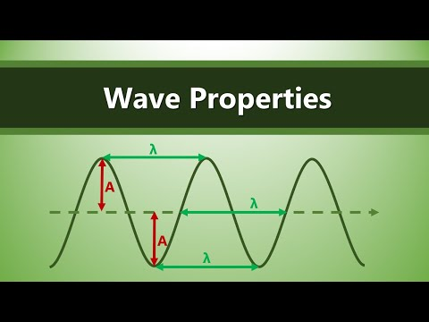

Waves are disturbances that transfer energy from one point to another without the net movement of matter. Waves can be mechanical (requiring a medium) or electromagnetic (able to travel through a vacuum). The study of wave properties helps us understand how waves behave, interact, and transfer energy.
Key Properties of Waves
- Wavelength (λ): The distance between two consecutive points in phase on a wave (e.g., crest to crest or trough to trough).
- Amplitude (A): The maximum displacement of a particle from its rest position. It is related to the energy carried by the wave.
- Frequency (f): The number of oscillations or cycles that occur in one second. Measured in hertz (Hz).
- Period (T): The time taken for one complete cycle of the wave to pass a given point. \( T = \frac{1}{f} \)
- Wave speed (v): The speed at which the wave travels through the medium. Given by \( v = f \lambda \)
- Phase: Describes the position of a point in time on a waveform cycle. Two points are in phase if they move together and out of phase if they move oppositely.

Written by Thenura Dilruk